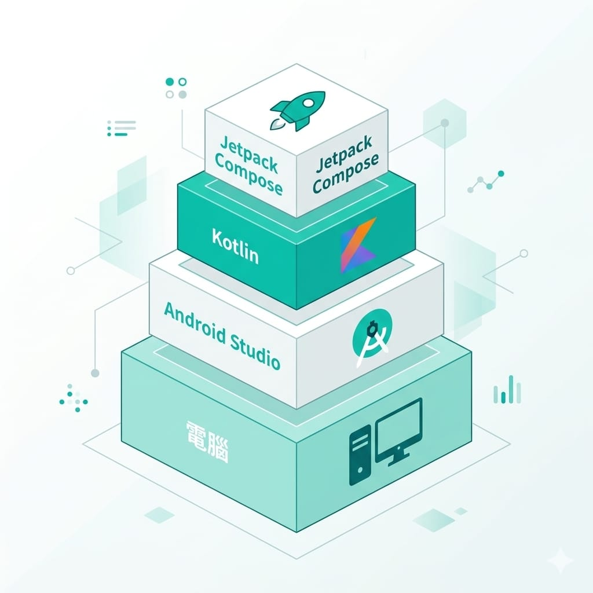
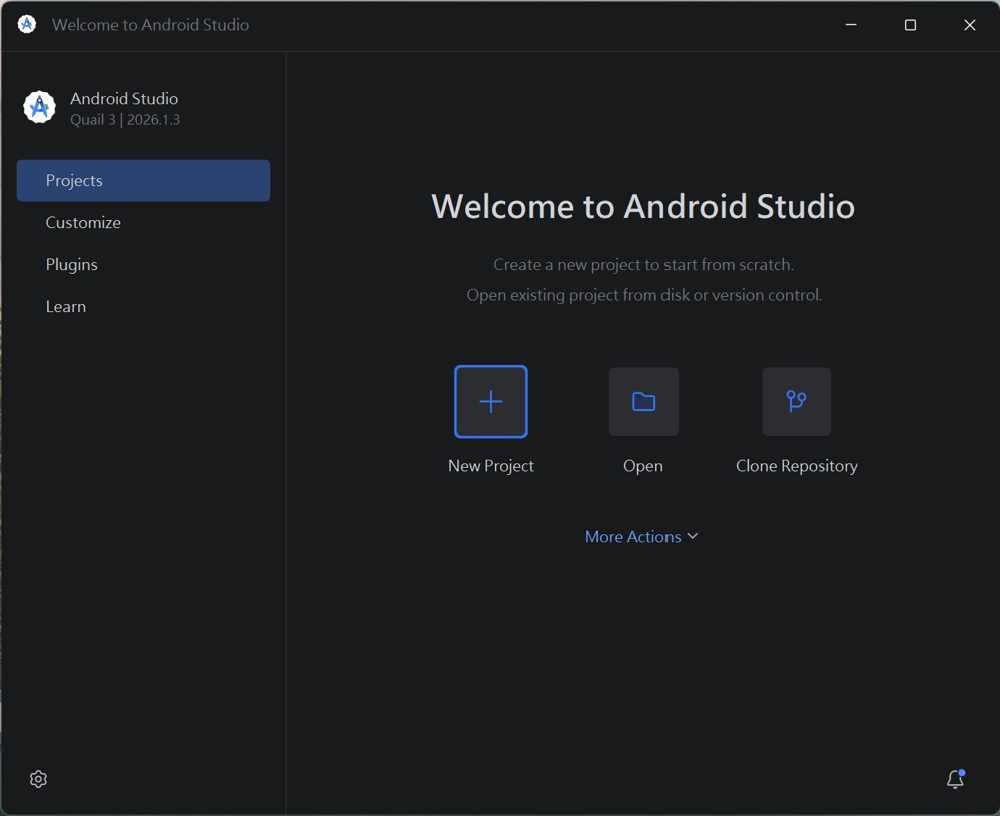
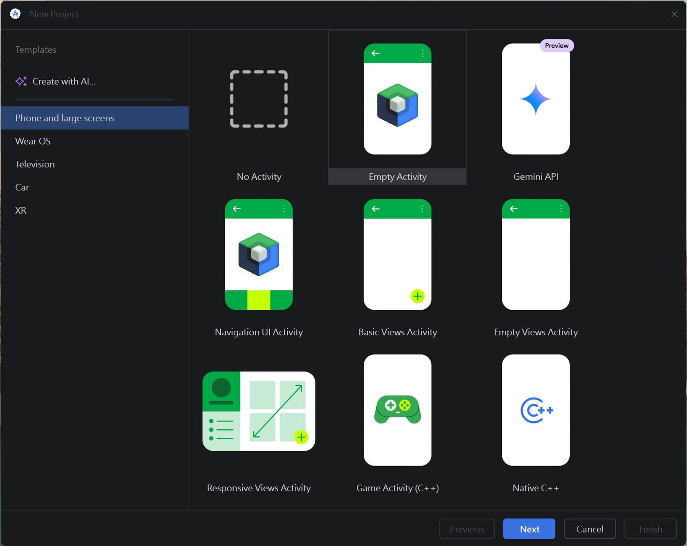
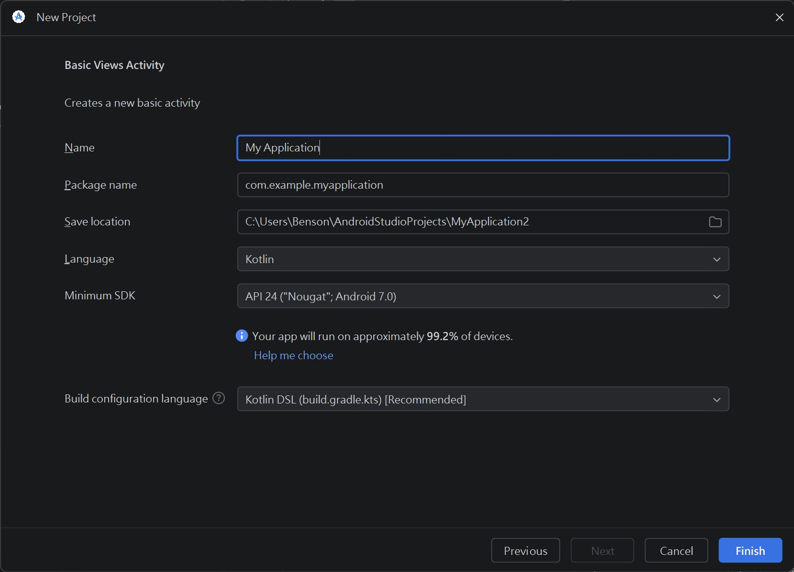
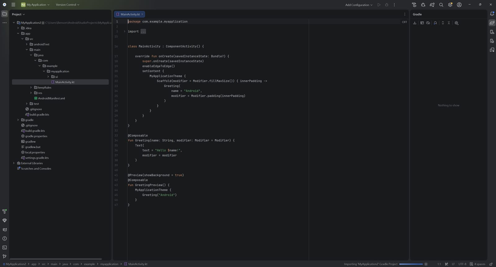

iOS 學習路徑走完了，現在換 Android。如果你是先學過 iOS 再看到這裡，會很有感——很多觀念是共通的，這條路徑你會走得比第一次快。如果你是直接從 Android 開始，也完全沒問題，這篇會從零帶你準備好。
跟 iOS 比，Android 開發第一步就親切很多：任何一台電腦都能開始，Windows、Mac、Linux 都行，不用像 iOS 那樣非得買 Mac。這也是很多人選擇先做 Android 入門的原因。
這篇帶你完成：安裝 Android Studio、認識 SDK 與模擬器、準備 Google 帳號、認識 Kotlin 與 Jetpack Compose。
一、安裝 Android Studio
Android Studio 是 Google 官方的開發工具，完全免費，是你寫 Android App 的主場。
安裝步驟：
- 到 Android 開發者官網 下載 Android Studio。
- 選對應你作業系統的版本（Windows / Mac / Linux）。
- 執行安裝程式，一路照預設點下去即可。
第一次啟動時，它會透過一個設定精靈幫你下載必要的元件（包含 SDK、模擬器等），這步需要一點時間和網路流量，接好電源、耐心等它跑完。
硬體建議：Android Studio 蠻吃資源的。記憶體建議 16GB 以上會比較順（8GB 也能跑但會比較喘），硬碟也要留足夠空間給 SDK 和模擬器。
二、認識 SDK 與模擬器
第一次啟動時裝的那些元件，你會反覆用到，先認識兩個：
- Android SDK（Software Development Kit）：開發 Android App 需要的工具和函式庫的總稱。它包含編譯工具、各個 Android 版本的 API 等。Android Studio 會幫你管理，你透過它的 SDK Manager 就能下載/更新不同 Android 版本。
- 模擬器（Emulator / AVD）：在電腦上模擬出一支 Android 手機，讓你不用真機也能測試 App。你可以建立不同機型、不同 Android 版本的虛擬裝置（AVD）來測。
第一次可以先用設定精靈裝好的預設模擬器。之後想測不同螢幕尺寸或版本，再用 Device Manager 新增。
三、準備 Google 帳號
寫程式、用模擬器測試，用你平常的 Google 帳號就行，不用花錢。
只有當你要把 App 上架到 Google Play 時，才需要註冊 Google Play 開發者帳號——這是一次性的 US$25（付一次終身有效，不像 iOS 要年繳）。
建議節奏：現在學習階段先不用急著付費，等到系列後面的上架專篇，真的要發布時再註冊。而且要提醒你，Google Play 上架有一些新手不知道的規則（例如新個人帳號要先做封閉測試），這些我會在上架那篇完整說明。
四、認識你的工具：Kotlin 與 Jetpack Compose
環境好了，認識接下來要用的兩個核心工具：

- Kotlin：程式語言，是你用來寫邏輯的工具。它是 Google 現在主推的 Android 官方語言，語法現代、簡潔、安全。（你可能聽過 Java 也能寫 Android，那是比較舊的選擇；新手直接學 Kotlin 就好。）
- Jetpack Compose：畫面框架，用來刻使用者介面。它是「宣告式」寫法——描述畫面長怎樣，它幫你畫出來，程式碼精簡。
如果你學過 iOS，這裡會有超強既視感：Kotlin 對應 Swift、Jetpack Compose 對應 SwiftUI，設計理念幾乎一模一樣。這也是為什麼學過一個平台再學另一個會快很多。
它們的堆疊關係是：電腦（硬體）→ Android Studio（開發工具）→ Kotlin（語言）→ Jetpack Compose（畫面框架）。
五、建立第一個專案
環境裝好了，來新建一個專案看看（先建起來、跑得動就好，寫程式是後面的事）。
第一步：歡迎畫面點 New Project。 打開 Android Studio 會看到歡迎畫面，點左邊 Projects → New Project（中間那個藍色「＋」）。

第二步：選範本，挑 Empty Activity。 左側先選 Phone and large screens（手機），然後在範本裡選 Empty Activity（上排中間那個藍綠色方塊圖示）——這是 Jetpack Compose 的空白範本，也是這系列後面要用的。按 Next。

⚠️ 別選錯範本：清單裡的 Basic Views Activity、Empty Views Activity 是舊的 Views／XML 寫法，不是 Compose。我們這系列用 Compose，要選 Empty Activity（不含 Views 字樣的那個）。選錯的話後面 Compose 篇會對不上。
第三步：填專案設定。 這頁填幾個欄位：
- Name：App 名稱，例如
MyFirstApp。 - Package name：套件名稱（App 的唯一識別，類似 iOS 的 Bundle ID），用預設
com.example.xxx也行。 - Save location：專案存哪，用預設即可。
- Language：選 Kotlin（這系列用它）。
- Minimum SDK：App 最低支援的 Android 版本。選預設的（例如 API 24）就好，畫面會告訴你「你的 App 能支援約 XX% 的裝置」——選越低支援越多舊機。
- Build configuration language：用預設 Kotlin DSL 即可。
填好按 Finish。

第四步：等它建好。 按 Finish 後，Android Studio 會開始建立專案、下載相依套件（第一次會跑一個叫 Gradle 的建置工具，可能要等幾分鐘，右下角有進度）。跑完就會進到主畫面——左邊是檔案清單、中間是程式碼、之後執行鈕在上方。

看到主畫面就代表專案建好了。接下來（下一篇開始）就是學 Kotlin、用 Compose 把畫面做出來。
六、建立模擬器，把 App 跑起來
專案建好後，你可能會想按上方的綠色 Run ▶ 跑跑看——但很可能沒反應。這是 Android 跟 iOS 很不一樣的地方：iOS 裝好就有模擬器可選，Android 要自己先建一台。沒有可跑的裝置，Run 就沒地方執行。
先確認： Run 按鈕旁邊有個裝置下拉選單，如果顯示「No devices」或空的，就是還沒有模擬器，照下面建一台。（另外，如果專案剛建好、底部還有進度條在跑 Gradle，先等它跑完再按 Run。）
建立模擬器（AVD，Android Virtual Device）：
- 點裝置下拉選單旁的 Device Manager（或選單 Tools → Device Manager）。
- 按 ＋ / Create Virtual Device。
- 選一支手機機型（例如 Pixel 系列）→ Next。
- 選一個系統映像檔（挑標示 Recommended 的；若旁邊有下載圖示，先點下載，要等一下）→ Next → Finish。
跑起來：
- 上方裝置下拉選單，選你剛建好的模擬器。
- 按綠色 Run ▶。
- 模擬器會開機（第一次較久，一兩分鐘正常），然後你的 App 就會出現在模擬的 Android 手機上。
看到 App 在模擬器裡跑起來，你的 Android 環境就完全打通了。（也可以接實體 Android 手機跑，但要先在手機開「開發者選項 + USB 偵錯」，這個之後真的要用再說，學習階段用模擬器最方便。）
這一步大約要花多久？
- 下載安裝 Android Studio + 設定精靈裝元件：半天內（主要在等下載）。
- 準備 Google 帳號：幾分鐘。
- 熟悉 Android Studio 介面、建個空專案、跑模擬器：抓 3~5 天。
如果你已經學過 iOS，這階段可能一兩天就熟了，因為 IDE 的邏輯類似。這步目標很單純：能打開 Android Studio、新建一個空專案、在模擬器把它跑起來。看到空白 App 在模擬的 Android 手機上出現，就成功了。
下一篇
環境備妥後，下一篇進入 Kotlin 語言基礎。如果你學過 Swift，會發現 Kotlin 很多概念似曾相識（變數、函式、還有對應「可選型別」的 nullable），學起來會很順。
一步一步來，Android 這條路你會走得比想像中快。下篇見。🐾
系列導覽
- 📚 回到 App 開發完整指南 全系列目錄
- ⬅️ 上一篇：iOS App 怎麼賺錢（iOS 路徑最後一篇）
- ➡️ 下一篇：Kotlin 語言基礎